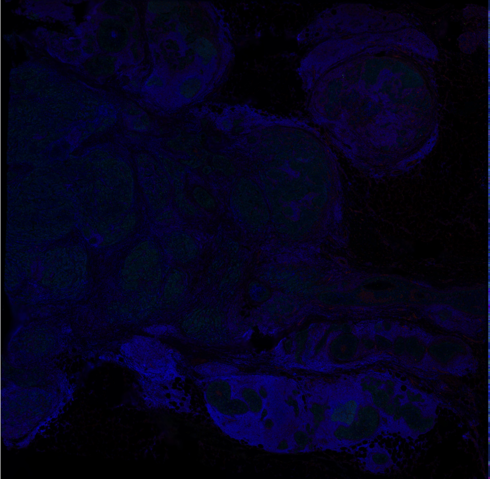
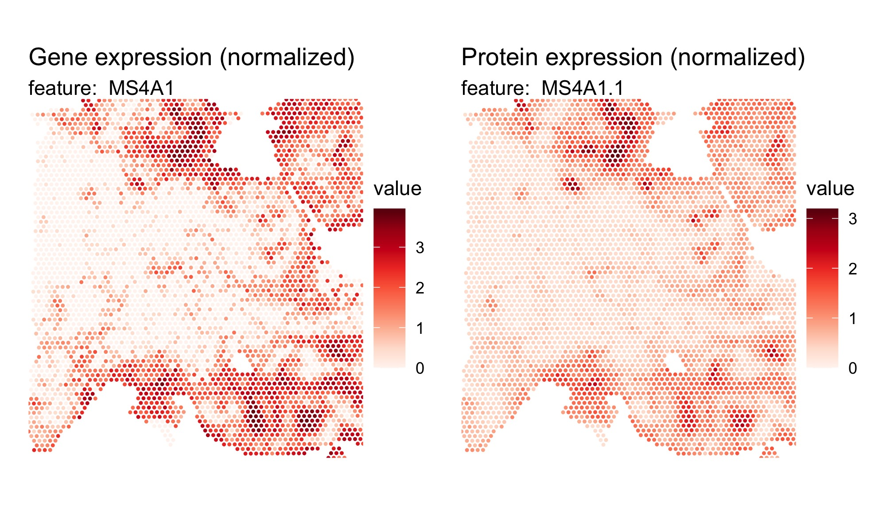
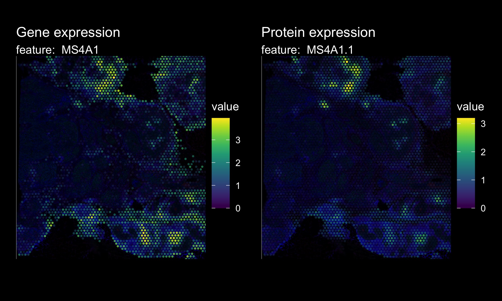
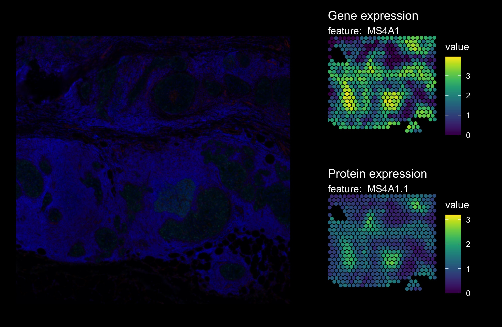
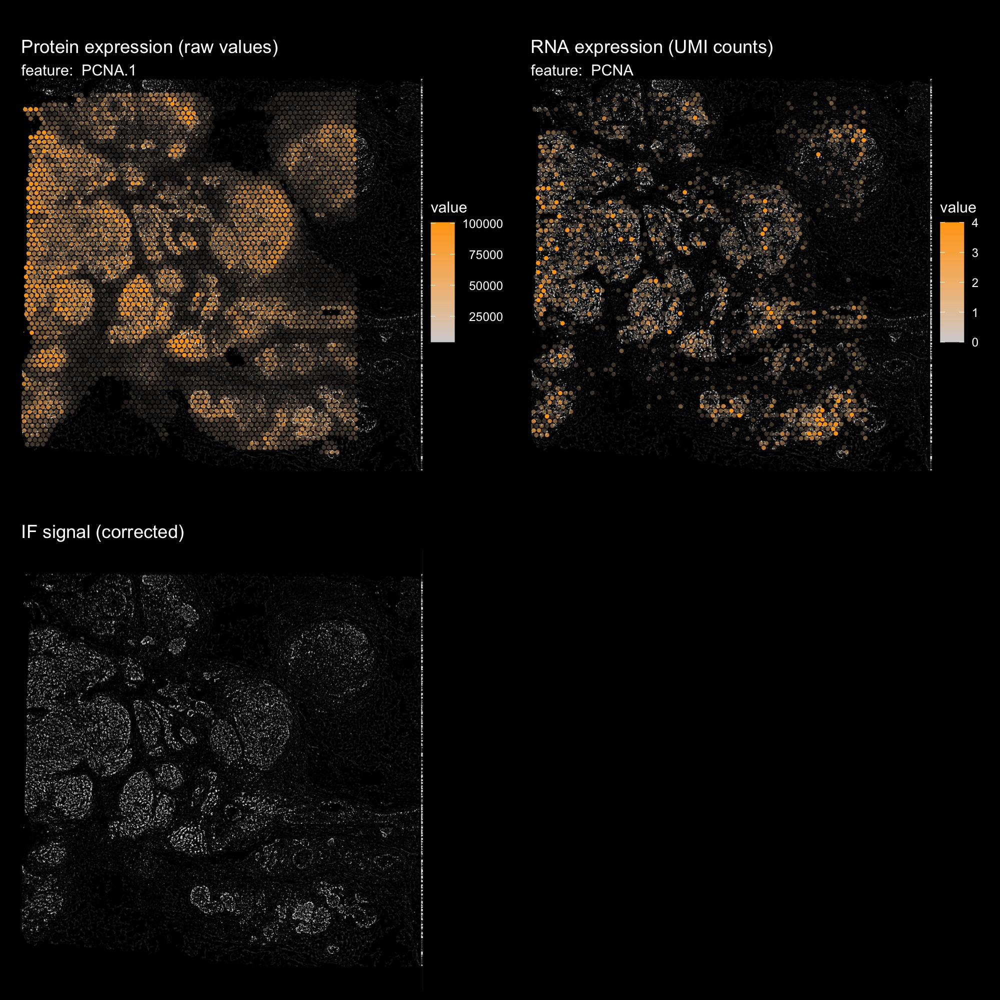
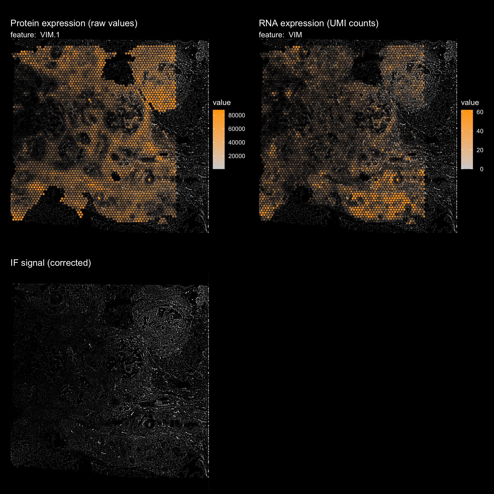
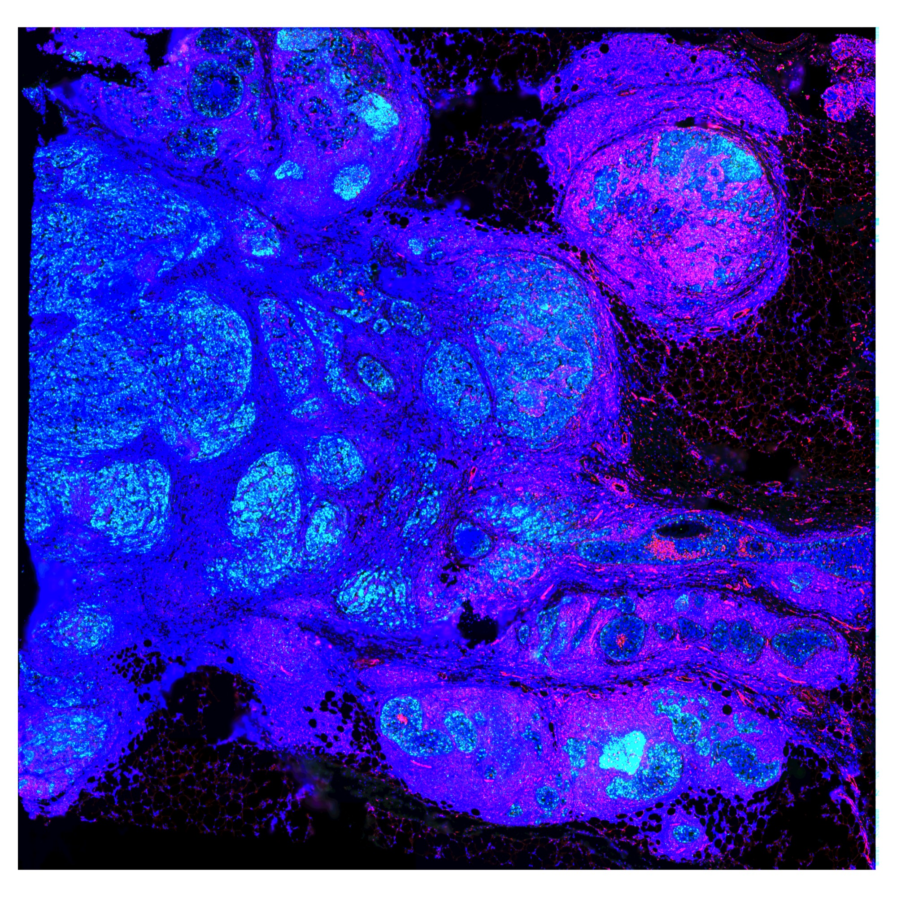
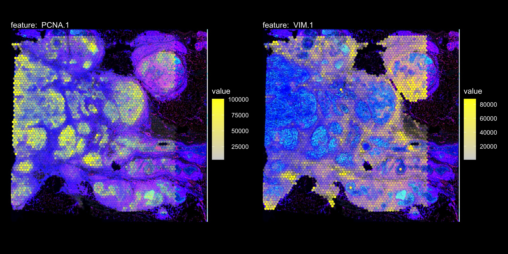

Visium + Immunofluorescence data
Last compiled: 08 September 2025
IF_data.RmdIn this article, we’ll demonstrate how to load Immunoflurescence (IF)
data with semla.
You can download example data from 10x Genomics website. Here we’ll use a Breast Cancer data set called “Visium CytAssist Gene and Protein Expression Library of Human Breast Cancer, IF, 6.5mm (FFPE)”.
Assuming that you have downloaded the data (`filtered_feature_bc_matrix.h5` and the `spatial/` folder) into your current working directory (and in a folder called “IF_data/” in this case) , you can load the data into a Seurat object:
samples <- "IF_data/filtered_feature_bc_matrix.h5"
imgs <- "IF_data/spatial/tissue_hires_image.png"
spotfiles <- "IF_data/spatial/tissue_positions.csv"
json <- "IF_data/spatial/scalefactors_json.json"
infoTable <- tibble(samples, imgs, spotfiles, json)
hBrCa <- ReadVisiumData(infoTable)Now we have access to both gene expression counts stored in the ‘Spatial’ assay and antibody capture measurements stored in the ‘AbCapture’ assay.
hBrCa## An object of class Seurat
## 18120 features across 4169 samples within 2 assays
## Active assay: Spatial (18085 features, 0 variable features)
## 1 other assay present: AbCaptureThis data set comes with a immunofluorescence image that we can use as a background for our plots.
hBrCa <- LoadImages(hBrCa, image_height = 1900)
ImagePlot(hBrCa, mar = c(0, 0, 0, 0))
Now we can plot both RNA expression values and antibody capture
measurements with semla. But first, let’s normalize the
expression values.
DefaultAssay(hBrCa) <- "Spatial"
hBrCa <- hBrCa |> NormalizeData()
DefaultAssay(hBrCa) <- "AbCapture"
hBrCa <- hBrCa |> NormalizeData(normalization.method = "CLR")Plot expression values:
DefaultAssay(hBrCa) <- "Spatial"
p1 <- MapFeatures(hBrCa, features = "MS4A1", override_plot_dims = TRUE) &
ThemeLegendRight()
p1 <- ModifyPatchworkTitles(p = p1, titles = "Gene expression (normalized)")
DefaultAssay(hBrCa) <- "AbCapture"
p2 <- MapFeatures(hBrCa, features = "MS4A1.1", override_plot_dims = TRUE) &
ThemeLegendRight()
p2 <- ModifyPatchworkTitles(p = p2, titles = "Protein expression (normalized)")
p1 + p2 + plot_layout(ncol = 2)
If we include the immunofluorescence image as the background for our plots, we might want to modify the plots to have a black theme.
dark_theme <- theme(plot.background = element_rect(fill = "black", color = "black"),
plot.title = element_text(colour = "white"),
plot.subtitle = element_text(colour = "white"),
legend.title = element_text(colour = "white"),
legend.text = element_text(colour = "white"))
DefaultAssay(hBrCa) <- "Spatial"
p1 <- MapFeatures(hBrCa, features = "MS4A1", override_plot_dims = TRUE,
colors = viridis::viridis(n = 11), image_use = "raw",
scale_alpha = TRUE) &
ThemeLegendRight() & dark_theme
p1 <- ModifyPatchworkTitles(p = p1, titles = "Gene expression")
DefaultAssay(hBrCa) <- "AbCapture"
p2 <- MapFeatures(hBrCa, features = "MS4A1.1", override_plot_dims = TRUE,
colors = viridis::viridis(n = 11), image_use = "raw",
scale_alpha = TRUE) &
ThemeLegendRight() & dark_theme
p2 <- ModifyPatchworkTitles(p = p2, titles = "Protein expression")
p1 + p2 + plot_layout(ncol = 2)
With this global visualization, it’s quite difficult to see the immunofluorescence image in the background. If we zoom in on a smaller area, it become slightly easier to compare the expression values with the background image.
The plots below show a zoom in view of the bottom right corner.
DefaultAssay(hBrCa) <- "Spatial"
p1 <- MapFeatures(hBrCa, features = "MS4A1",
crop_area = c(0.5, 0.65, 0.85, 1), pt_size = 2,
colors = viridis::viridis(n = 11)) &
ThemeLegendRight() & dark_theme
p1 <- ModifyPatchworkTitles(p = p1, titles = "Gene expression")
DefaultAssay(hBrCa) <- "AbCapture"
p2 <- MapFeatures(hBrCa, features = "MS4A1.1",
crop_area = c(0.5, 0.65, 0.85, 1), pt_size = 2,
colors = viridis::viridis(n = 11)) &
ThemeLegendRight() & dark_theme
p2 <- ModifyPatchworkTitles(p = p2, titles = "Protein expression")
p3 <- ImagePlot(hBrCa, crop_area = c(0.5, 0.65, 0.85, 1), return_as_gg = TRUE)
p3 + p1 + p2 + plot_layout(design = c(area(t = 1, l = 1, b = 2, r = 2),
area(t = 1, l = 3, b = 1, r = 3),
area(t = 2, l = 3, b = 2, r = 3))) &
dark_theme
Change background image for visualization
We can also easily switch the images in semla. The only
requirement is that the alternative image is aligned with the spots and
has the same aspect ratio as the original image used for Space
Ranger.
The code below illustrated how one can select the red and green color
channels from the immunofluorescence image and reload them for
visualization with semla.
library(magick)
# Fetch the path to the immunofluoresence (IF) image
impath <- GetStaffli(hBrCa)@imgs
# Load IF image
im <- image_read(path = impath)
# Extract channels. Here we only select the red and green channels,
# but we could of course also use the DAPI stain in the blue channel
cols <- c("red", "green")
channels <- lapply(cols, function(col) {
image_channel(im, channel = col)
}) |> setNames(nm = cols)
# Apply simple background correction to reduce autofluorescence
# Note that this code is just for demonstration.
channels <- lapply(channels, function(ch) {
im_blurred <- image_median(ch, radius = 20)
im_composite <- image_composite(im_blurred, ch, operator = "Minus")
return(im_composite)
})
# Export images
channels$green |>
image_normalize() |>
image_write(path = "IF_data/normalized_image_green.png",
format = "png", quality = 100)
channels$red |>
image_normalize() |>
image_write(path = "IF_data/normalized_image_red.png",
format = "png", quality = 100)
im |>
image_normalize() |>
image_write(path = "IF_data/normalized_image.png",
format = "png", quality = 100)Use green channel (PCNA) as background
In order to switch the image in the Seurat object, we can just
replace the path to the image using ReplaceImagePaths and
then reload the image to desired size with LoadImages.
hBrCa <- ReplaceImagePaths(hBrCa, paths = "IF_data/normalized_image_green.png")
hBrCa <- LoadImages(hBrCa, image_height = 1957)Now we can make plots with semla using the new image as
background.
DefaultAssay(hBrCa) <- "AbCapture"
p1 <- MapFeatures(hBrCa, features = "PCNA.1", image_use = "raw", slot = "counts",
scale_alpha = TRUE, pt_size = 1.5,
colors = c("lightgrey", "orange"), max_cutoff = 0.99) &
ThemeLegendRight()
p1 <- ModifyPatchworkTitles(p1, titles = "Protein expression (raw values)")
DefaultAssay(hBrCa) <- "Spatial"
p2 <- MapFeatures(hBrCa, features = "PCNA", image_use = "raw", slot = "counts",
scale_alpha = TRUE, pt_size = 1.5,
colors = c("lightgrey", "orange"), max_cutoff = 0.99) &
ThemeLegendRight()
p2 <- ModifyPatchworkTitles(p2, titles = "RNA expression (UMI counts)")
p3 <- ImagePlot(hBrCa, return_as_gg = TRUE)
p3 <- ModifyPatchworkTitles(p3, titles = "IF signal (corrected)")
p1 + p2 + p3 + plot_layout(ncol = 2) & dark_theme
Use red channel (VIM) as background
hBrCa <- ReplaceImagePaths(hBrCa, paths = "IF_data/normalized_image_red.png")
hBrCa <- LoadImages(hBrCa, image_height = 1957)
DefaultAssay(hBrCa) <- "AbCapture"
p1 <- MapFeatures(hBrCa, features = "VIM.1", image_use = "raw", slot = "counts",
scale_alpha = TRUE, pt_size = 1.5,
colors = c("lightgrey", "orange"), max_cutoff = 0.99) &
ThemeLegendRight()
p1 <- ModifyPatchworkTitles(p1, titles = "Protein expression (raw values)")
DefaultAssay(hBrCa) <- "Spatial"
p2 <- MapFeatures(hBrCa, features = "VIM", image_use = "raw", slot = "counts",
scale_alpha = TRUE, pt_size = 1.5,
colors = c("lightgrey", "orange"), max_cutoff = 0.99) &
ThemeLegendRight()
p2 <- ModifyPatchworkTitles(p2, titles = "RNA expression (UMI counts)")
p3 <- ImagePlot(hBrCa, return_as_gg = TRUE)
p3 <- ModifyPatchworkTitles(p3, titles = "IF signal (corrected)")
p1 + p2 + p3 + plot_layout(ncol = 2) & dark_theme
Use normalized IF image as background
hBrCa <- ReplaceImagePaths(hBrCa, paths = "IF_data/normalized_image.png")
hBrCa <- LoadImages(hBrCa, image_height = 1957)
ImagePlot(hBrCa)
DefaultAssay(hBrCa) <- "AbCapture"
MapFeatures(hBrCa, features = c("PCNA.1", "VIM.1"), image_use = "raw",
slot = "counts", colors = c("lightgrey", "yellow"), pt_size = 1.7,
scale_alpha = TRUE, max_cutoff = 0.99) &
ThemeLegendRight() & dark_theme &
theme(plot.title = element_blank())
Package versions
-
semla: 1.4.0
Session info
## R version 4.4.2 (2024-10-31)
## Platform: aarch64-apple-darwin20.0.0
## Running under: macOS Sequoia 15.5
##
## Matrix products: default
## BLAS/LAPACK: /Users/javierescudero/miniconda3/envs/r-semlaupd/lib/libopenblas.0.dylib; LAPACK version 3.12.0
##
## locale:
## [1] en_US.UTF-8/en_US.UTF-8/en_US.UTF-8/C/en_US.UTF-8/en_US.UTF-8
##
## time zone: Europe/Stockholm
## tzcode source: system (macOS)
##
## attached base packages:
## [1] stats graphics grDevices utils datasets methods base
##
## other attached packages:
## [1] semla_1.4.0 ggplot2_3.5.2 dplyr_1.1.4 Seurat_5.3.0
## [5] SeuratObject_5.1.0 sp_2.2-0
##
## loaded via a namespace (and not attached):
## [1] RColorBrewer_1.1-3 rstudioapi_0.17.1 jsonlite_1.9.0
## [4] magrittr_2.0.3 spatstat.utils_3.1-4 magick_2.8.7
## [7] farver_2.1.2 rmarkdown_2.29 fs_1.6.5
## [10] ragg_1.3.3 vctrs_0.6.5 ROCR_1.0-11
## [13] spatstat.explore_3.4-3 htmltools_0.5.8.1 forcats_1.0.0
## [16] sass_0.4.9 sctransform_0.4.2 parallelly_1.42.0
## [19] KernSmooth_2.23-26 bslib_0.9.0 htmlwidgets_1.6.4
## [22] desc_1.4.3 ica_1.0-3 plyr_1.8.9
## [25] plotly_4.11.0 zoo_1.8-13 cachem_1.1.0
## [28] igraph_2.1.4 mime_0.12 lifecycle_1.0.4
## [31] pkgconfig_2.0.3 Matrix_1.7-2 R6_2.6.1
## [34] fastmap_1.2.0 fitdistrplus_1.2-3 future_1.34.0
## [37] shiny_1.10.0 digest_0.6.37 colorspace_2.1-1
## [40] patchwork_1.3.1 tensor_1.5.1 RSpectra_0.16-2
## [43] irlba_2.3.5.1 textshaping_0.4.0 progressr_0.15.1
## [46] spatstat.sparse_3.1-0 httr_1.4.7 polyclip_1.10-7
## [49] abind_1.4-5 compiler_4.4.2 withr_3.0.2
## [52] fastDummies_1.7.5 MASS_7.3-64 tools_4.4.2
## [55] lmtest_0.9-40 httpuv_1.6.15 future.apply_1.11.3
## [58] goftest_1.2-3 glue_1.8.0 dbscan_1.2.2
## [61] nlme_3.1-167 promises_1.3.2 grid_4.4.2
## [64] Rtsne_0.17 cluster_2.1.8 reshape2_1.4.4
## [67] generics_0.1.3 gtable_0.3.6 spatstat.data_3.1-6
## [70] tidyr_1.3.1 data.table_1.17.0 spatstat.geom_3.4-1
## [73] RcppAnnoy_0.0.22 ggrepel_0.9.6 RANN_2.6.2
## [76] pillar_1.10.1 stringr_1.5.1 spam_2.11-1
## [79] RcppHNSW_0.6.0 later_1.4.1 splines_4.4.2
## [82] lattice_0.22-6 survival_3.8-3 deldir_2.0-4
## [85] tidyselect_1.2.1 miniUI_0.1.1.1 pbapply_1.7-2
## [88] knitr_1.50 gridExtra_2.3 scattermore_1.2
## [91] xfun_0.53 matrixStats_1.5.0 stringi_1.8.4
## [94] lazyeval_0.2.2 yaml_2.3.10 evaluate_1.0.5
## [97] codetools_0.2-20 tibble_3.2.1 cli_3.6.4
## [100] uwot_0.2.3 xtable_1.8-4 reticulate_1.42.0
## [103] systemfonts_1.2.1 munsell_0.5.1 jquerylib_0.1.4
## [106] Rcpp_1.1.0 globals_0.16.3 spatstat.random_3.4-1
## [109] zeallot_0.2.0 png_0.1-8 spatstat.univar_3.1-3
## [112] parallel_4.4.2 pkgdown_2.1.1 dotCall64_1.2
## [115] listenv_0.9.1 viridisLite_0.4.2 scales_1.3.0
## [118] ggridges_0.5.6 purrr_1.0.4 rlang_1.1.5
## [121] cowplot_1.1.3 shinyjs_2.1.0